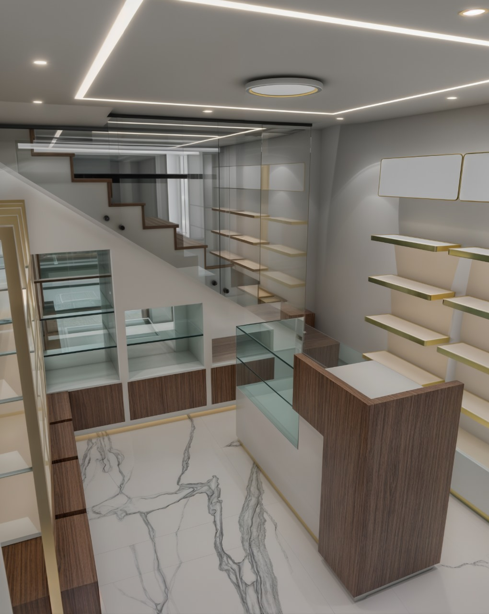
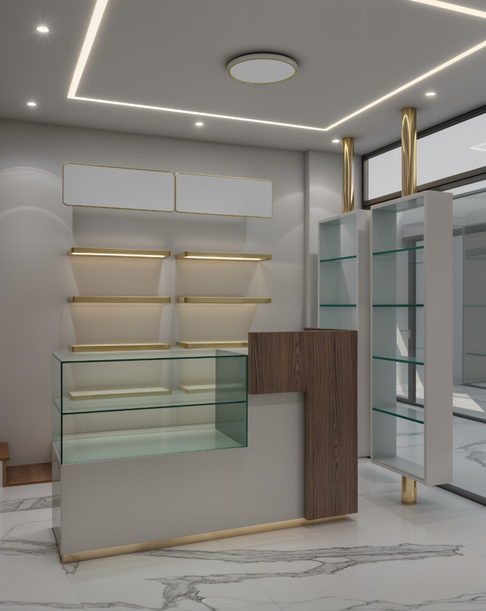
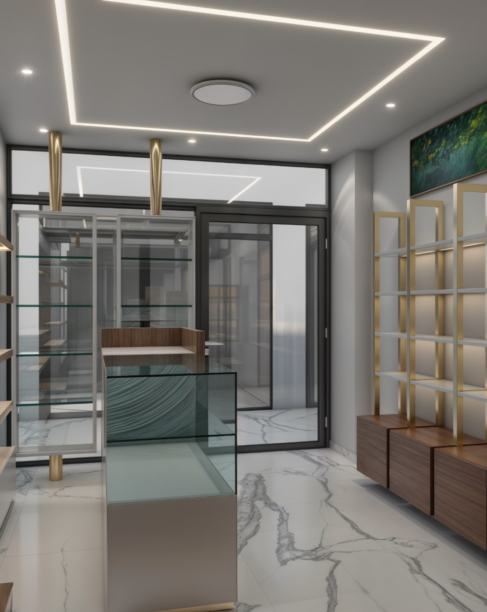
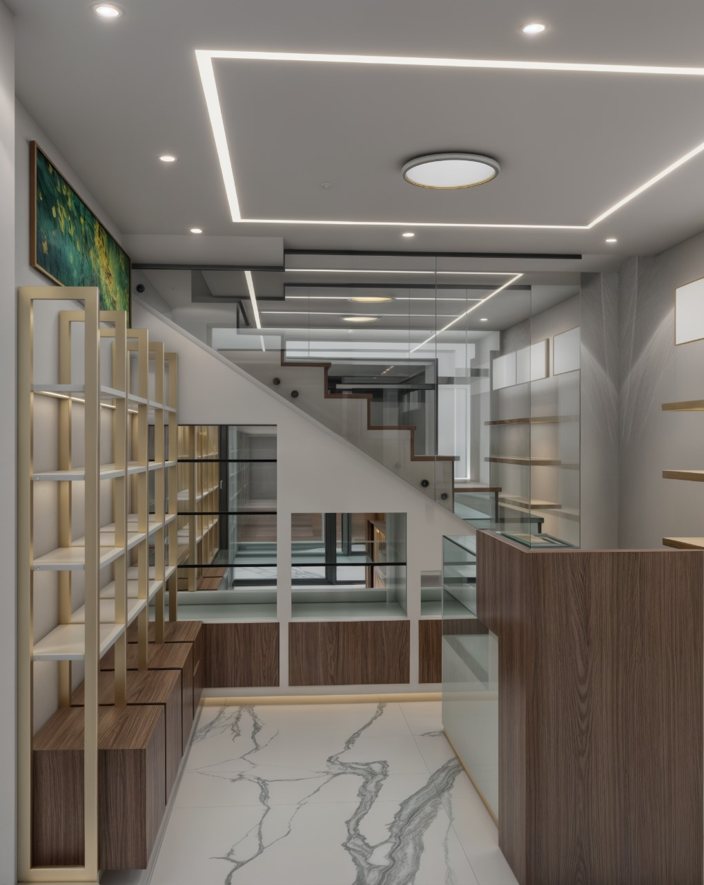
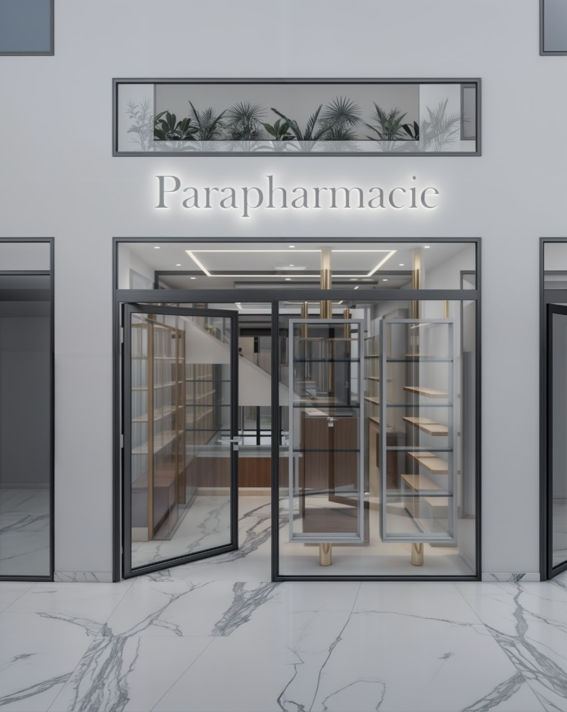
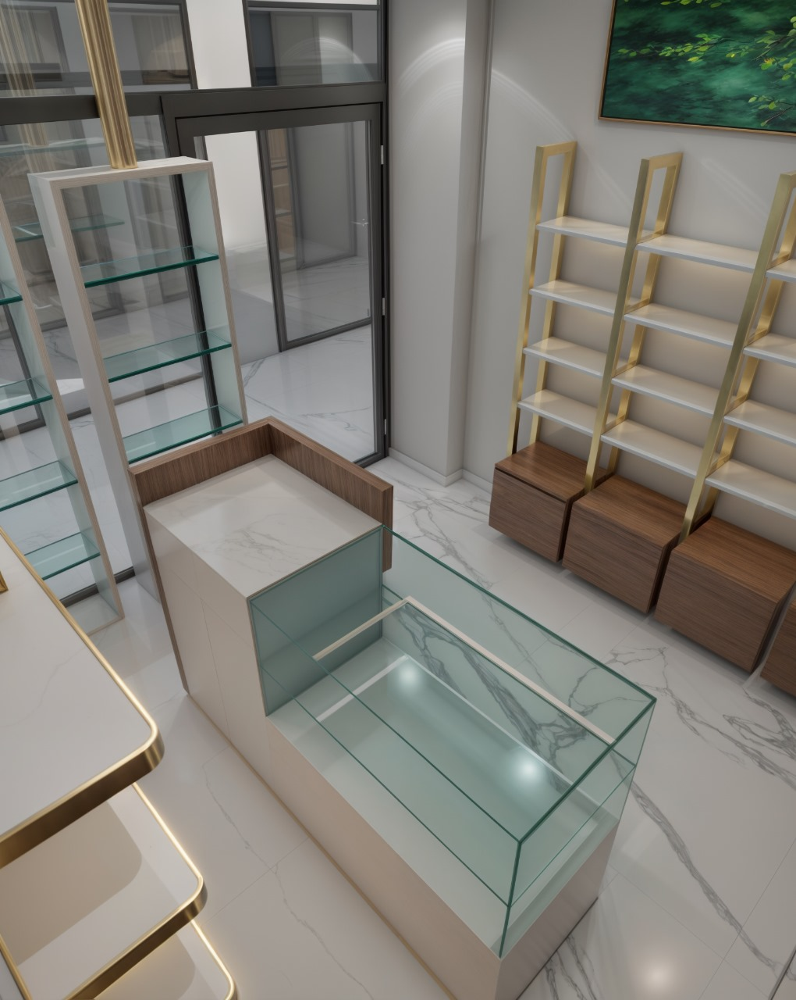
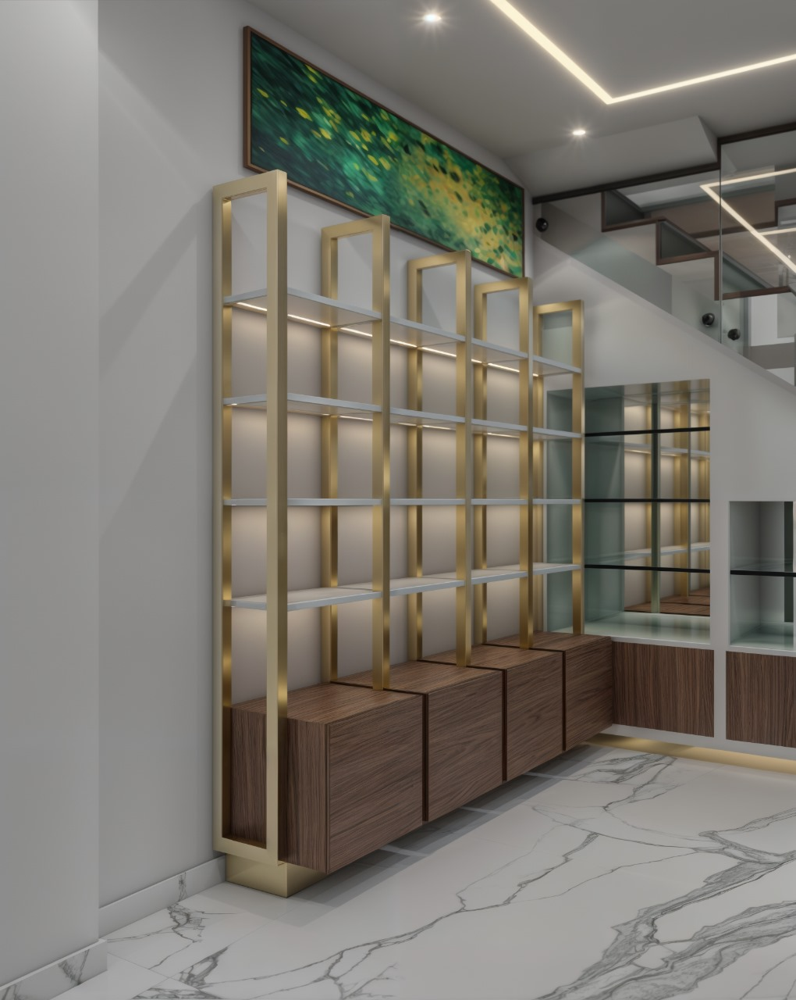

03 — Intérieur · Commercial
Parapharmacie
Salé.

Le concept
Des lignes pures, du verre, du bois et des touches dorées dessinent un espace commercial raffiné où chaque présentation gagne en clarté.





